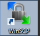
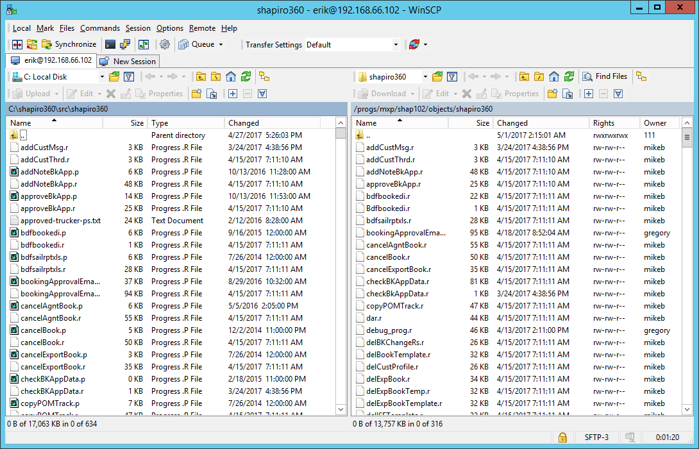
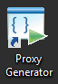
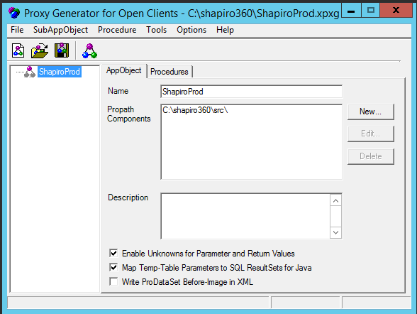

- Make sure that you compile any programs that you want added to the WSDL 
- Login to Shap-exp-360pro for Production or Shap-exp-360dev for Development.
- Launch WinSCP
- Move over the .r files, of the programs you complied in Step 1 (See below for the directory names) 
- Launch the proxy generator 
- Hit the folder icon and navigate to C:\shapiro360 and chose ShapiroProd or ShapiroDev 
- The hit Procedure->Add->Non-Persistent
- Hit save and then hit to generate the WSDL
- Next go back to WinSCP and navigate to the below folders
- Drag ShapiroProd.xpxg from the left panel to the right panel. If you get and error the delete the file on the right side and then drag over the file.
- Open up a rashi6 session and cd to /home/allegro/bin and run either xpxgdev-build.sh or xpxgprod-build.sh
- You should receive a message that this run was successful.
- Next go to http://192.168.66.102:9090
- Go to the Web Services Adapter section and select either shap-exp-rashi6.wsadevShapiro360 or shap-exp-rashi6.wsaprodShapiro360
- Got t Status Enablement and disable the Web Service Adaptor.
- Then go back to the previous screen and hit Update.
- Type /progs/mxp/shap102/objects/ShapiroProd.wsm or /progs/mxp/shap102test/objects/ShapiroDev.wsm and hit submit.
- Click through the next page and you should receive a message that it was updated.
- Lastly right click and open Configure Tomcat as administrator
- Click stop, wait about 10 seconds and then start tomcat.